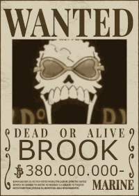

Como anda nosso querido esqueleto Brook YOHOHOHOHO
Brook (Burukku) é um esqueleto músico que foi encontrado por Luffy e sua tripulação, em uma, embarcação fantasma, ingressando ao bando de Luffy. Brook é possuidor dos poderes da "Fruta do Diabo", Yomi Yomi no Mi (Fruta do Reviver), permitindo que ele possa retornar a vida, após a morte. Porém como ele demorou para encontrar seu corpo, enquanto vagava pelos mares na forma de alma, e quando o encontrou, já não estava mais inteiro. A música mais emblemática do Brook é a tocada por sua antiga tripulação Sake de Binks.
Atualmente sua recompensa é de 380 milhões de Berries.
Poderes do esqueletinho Brook
Brook desenvolve a capacidade de remover a alma de seu corpo, o que o torna intangível, e de controlar a energia que a sua alma emite através da sua música, o permitindo tanto envolver objetos com essa energia e convocar o frio do submundo. Além disso ele luta bem com sua bengala que se torna uma espada, tendo golpes q podem congelas seus inimigos.
Gostaria de conhecer os outros Mugiwaras?